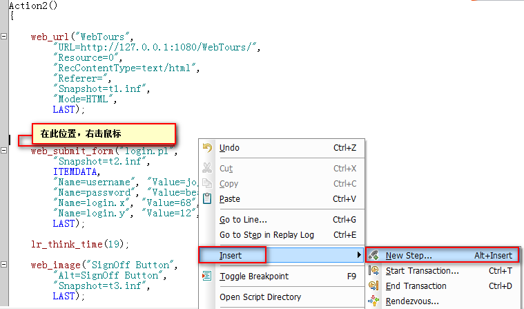
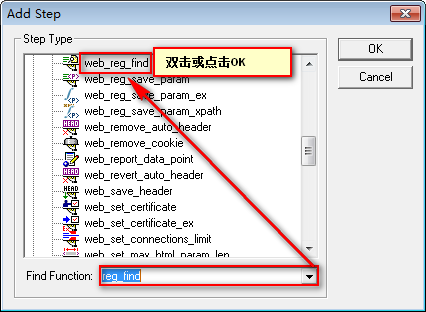
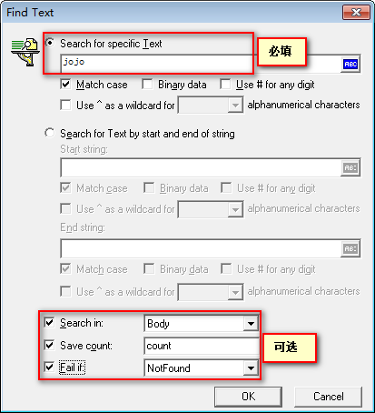

VuGen-检查点
目标
- 了解什么是检查点
- 掌握LR中检查点的使用
一、为什么学习检查点？
1.1 需求 1
- 录制网站登录脚本 http://127.0.0.1:1080/WebTours/
- 运行脚本时，检查登录用户是否为jojo
登录脚本
Action()
{
web_url("WebTours",
"URL=http://127.0.0.1:1080/WebTours/",
"Resource=0",
"RecContentType=text/html",
"Referer=",
"Snapshot=t1.inf",
"Mode=HTML",
LAST);
lr_think_time(8);
web_submit_form("login.pl",
"Snapshot=t2.inf",
ITEMDATA,
"Name=username", "Value=jojo", ENDITEM,
"Name=password", "Value=bean", ENDITEM,
"Name=login.x", "Value=68", ENDITEM,
"Name=login.y", "Value=12", ENDITEM,
LAST);
lr_think_time(19);
web_image("SignOff Button",
"Alt=SignOff Button",
"Snapshot=t3.inf",
LAST);
return 0;
}
二、检查点
检查点是在回放脚本期间搜索指定的文本或图片，从而验证服务器响应数据的正确性
方法：
1. web_reg_find() 查找文本【掌握】
2. web_find() 查找文本【了解】
3. web_image_check() 查找图片【了解】
提示：
1). LR中的检查点推荐使用web_reg_find()函数；
（reg开头的函数为注册函数，运行时从缓存中查找；）
2). web_find()普通查找函数（在当前页面查找指定内容）
注意：
1. 使用web_find、web_image_check两个函数，必须(启用文本和图片检查)
(在runtime setting -> Preferences里面，把Enable image and text check选中，否则不执行该
查找函数)
2. 要使用检查点录制模式必须是HTML-based mode
2.1 函数 web_reg_find()
web_reg_find为LR检查点函数
参数：
1. Text:要检查的文本内容【必填】
2. Search：搜索响应数据范围- ALL、Body、Header【选填】
3. Fail：失败条件-NotFound/Found 【选填】
4. SaveCount：匹配结果数量且返回到参数中【选填】
注意：
1. 函数包含reg为注册函数，注册函数必须放到依赖执行函数之前(依赖：函数运行后的数据给注册函数使用)
2.2 需求解决
使用 web_reg_find() 注册函数
插入函数位置

查找函数

设置参数

参数：
1. Search for specific Text：搜索特定文本
2. Search in：搜范范围
1). All ：搜索Body+Headers
2). Body：只搜索Body
3). Headers：只搜索Headers
3. Save count：搜索满足条件的数量，并保存在指定的参数名中
4. Fail if：检查失败的条件
1). NotFound：没有找到检查失败【推荐】
2). Found：找到了检查失败
2.3 需求1 代码
Action()
{
// 关联 session
web_reg_save_param("Session",
"LB=name=userSession value=",
"RB=>",
LAST);
// 打开首页
web_url("首页","URL=http://127.0.0.1:1080/WebTours/",LAST);
// 注册函数 检查jojo
web_reg_find("Text=jojo",LAST);
web_submit_data("登录",
"Action=http://127.0.0.1:1080/WebTours/login.pl",
"Method=POST",
"TargetFrame=",
"Referer=",
"Mode=HTML",
ITEMDATA,
"Name=userSession", "Value={Session}", ENDITEM,
"Name=username", "Value=jojo", ENDITEM,
"Name=password", "Value=bean", ENDITEM,
LAST);
// 普通函数 jojo
web_find("web_find",
"What=jojo",
LAST);
// 检查图片函数
web_image_check("web_image_check",
"Src=/WebTours/images/itinerary.gif",
LAST);
return 0;
}